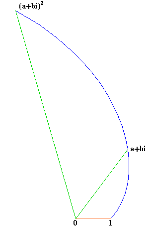
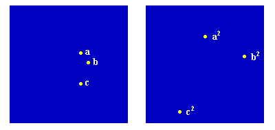
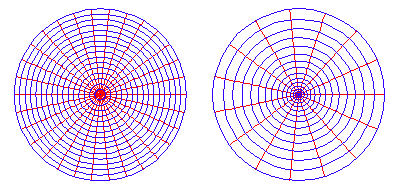
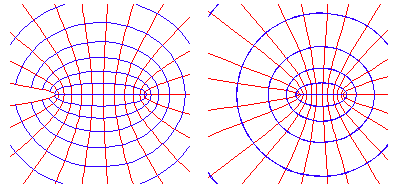
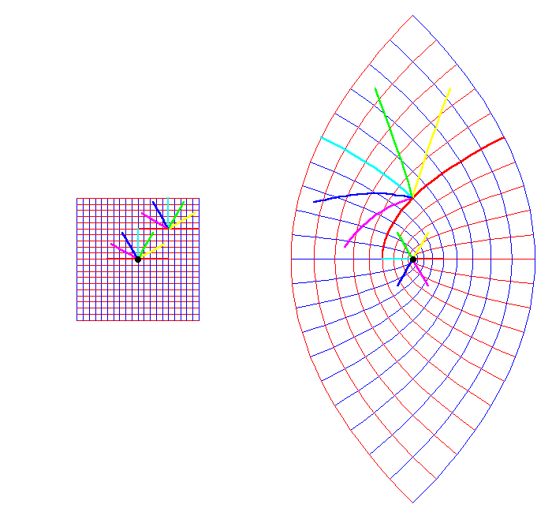
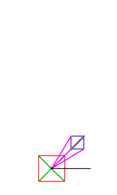
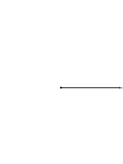
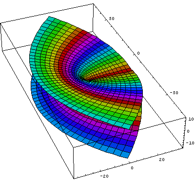

{kind=link}
{kind=link}
Figure 3

Riemann for Anti-Dummies Part 53
LOOK TO THE POTENTIAL
In his 1857 {Theory of Abelian Functions}, Bernhard Riemann stated that the foundation of his theory of higher transcendental functions depended on what he called "Dirichlet's Principle" and the method of thinking discussed by Gauss in his lectures on forces that act in proportion to the inverse square. These references help situate the historical specificity of Riemann's discovery, the understanding of which, is essential to understanding the discovery itself.
The Gauss lectures to which Riemann referred were summarized by Gauss in an 1840 memoir titled, "General Propositions relating to Attractive and Repulsive Forces acting in the inverse ratio of the square of the distance". There Gauss implicitly cast the fight between the physics of Kepler and Leibniz vs. the mystical pseudo-physics of Newton, Euler, Lagrange, and LaPlace, within the 2500 year ongoing drama between the two diametrically opposed views of man, as typified by the conflict between Plato's concept of {power}, and Aristotle's concept of {energy}. However, Gauss's memoir is only one scene in the history. It was written under the political pressures of the post-1789 attack against the American Revolution that asserted, by force, the Aristotelean concept of man as animal associated with such frauds as Newton, Euler, and Lagrange. As such, it does not explicitly reveal all the elements of the play. But, as in any Classical drama (as well as physical processes), the organizing principles of the entire composition are always present and active in every part of every scene. Consequently, from a knowledge of the history of ideas, and the historical context in which Gauss was educated, lived and worked, it is possible to recreate, in the imagination, that great play to whose scene our attention is now drawn.
The Fraud of Newton's Inverse Square "Law"
Given that Isaac Newton, by his own admission, was a fraud and a man convinced he had no soul ("Hypothesis non fingo"), it is a cause of some amazement that he was ever held in high esteem. This, of course, can be more easily understood, once one realizes that the high regard with which Newton has been held by some, was never for his physics, which, on its face, doesn't work, but rather, for his degraded view of man from which his physics was derived.
A great mythology has been built up around Newton's so-called theory of gravity, that asserts as a "law", that every material body in the universe possesses an innate force that attracts every other material body in the universe according to the product of the masses divided by the square of the distances between them. Most modern textbooks and professors of physics demand blind obedience to this "imperial" law, from all who wish to be indoctrinated into their freemasonry. Such obeisance is demanded, not because this law is held to be true, but because it is so obviously false. In the tradition of Mephistopheles, these high priests seek to bind their supplicants to their cause, by forcing them to willingly embrace a doctrine that is contrary to human reason. And in the tradition of Marlowe's Faust, too often these supplicants pay the price.
In fact, as Riemann enjoyed pointing out, Newton himself confessed his own immorality to Reverend Richard Bentley in 1693:
"Newton says: `That gravity should be innate, inherent, and essential to matter, so that one body can act upon another at a distance through a vacuum, without the mediation of anything else, by and through which their action and force may be conveyed from one to another, is to me so great an absurdity, that I believe no man who has in philosophical matters a competent faculty of thinking can ever fall into it.' See third letter to Bentley." (Riemann's Gesammelte Werke).
To accept Newton's fraud is to accept the Aristotlean concept on which it is based: that man, like animals, is limited to interacting with the physical universe (and by implication other human beings) only through the objects of sense perception, i.e. material bodies, the which exist in an empty, infinitely-extended Euclidean type space. Any change, or motion, that occurs among these bodies (or humans), originates in something innate to the bodies themselves, and not in any higher principle.
As Aristotle stated it:
"This then is one account of `nature', namely, that it is the immediate material substratum of things which have in themselves a principle of motion or change." (Aristotle's Physics, Book II.)
The person adopting such a view is eliminating from the universe the active principles, or "powers", as Plato called them, that exist outside the domain of sense-perception, but which make possible that which the senses perceive. For Aristotle, all that can be known about the interaction of physical bodies, is contained in the visible attributes of the bodies themselves (extension), and not in any higher principle. Similarly, all human interaction, for Aristotle (or Newton), is limited to the pair-wise interaction of human bodies, and not on such overarching governing influences as the individual human being's willful interaction with history, language- culture and the simultaneity of eternity.
By contrast, Plato, and later Cusa, insisted that it is those higher powers, not the objects of sense, on which the mind of the scientist must focus. As Cusa expressed this Platonic principle in his dialogue "On Actualized-Potential":
"CARDINAL: Temporal things are images of eternal things. Thus, if created things are understood, the invisible things of God are seen clearly for example, His eternity, power, and divinity. Hence, the manifestation of God occurs from the creation of the world.
BERNARD: The Abbot and I find it strange that invisible things are seen.
CARDINAL: They are seen invisibly just as when the intellect understands what it reads, it invisibly sees the invisible truth which is hidden behind the writing. I say "invisibly" (i.e. mentally) because the invisible truth, which is the object of the intellect, cannot be seen in any other way.
BERNARD: But how is this seeing elicited from the visible mundane creation?
CARDINAL: I know that what I see perceptibly does not exist from itself. For just as the sense of sight does not discriminate anything by itself but has its discriminating from a higher power, so too what is perceptible does not exist from itself but exists from a higher power. The Apostle said, "from the creation of the world" because from the visible world as creature we are elevated to the Creator. Therefore, when in seeing what is perceptible I understand that it exists from a higher power (since it is finite, and a finite thing cannot exist from itself; for how could what is finite have set its own limit?), then I can only regard as invisible and eternal this Power from which it exists...."
As a follower of Cusa, Kepler looked to this Platonic concept of higher powers to develop his notion of universal gravitation. Kepler understood the principle of universal gravitation to be that immaterial "species" (which is the Latin equivalent for the Greek word "idea") that had the "power" to move the material planets. This species could be "seen" mentally, as Cusa indicates, as an object of the intellect (Geistesmassen in the language of Riemann and Herbart). This thought-object itself is recognized in the visible domain, again as Cusa indicates, by its harmonic characteristics, expressed, as Kepler showed, by such relationships as the five regular solids, the equal area principle of planetary motion, the musical relationships among the planets, etc. A characteristic of this species was, (as Leonardo da Vinci had shown for light), that its effect diminished with distance according to the inverse of the square of the distance.
{Thus, for Kepler, as for Plato and Cusa, the action of material bodies was not the result of some nature innate to the material itself, but was the visible, measurable effect of an invisible, but efficient and cognizable, physical "power".}
This power to cognize such physical powers, and to act directly on those powers to control the physical processes themselves, expresses the efficient power of human cognition. This itself is a demonstration, contrary to Aristotle, Descartes and Newton, that the universe is not indifferent to human thought.
As Leibniz later wrote in his {Discourse on Metaphysics}:
"I do not accuse our new philosophers (Descartes), who claim to banish final causes from physics. But I am nevertheless obliged to confess that the consequences of this opinion appear dangerous to me, especially if I combine it with the one I refuted at the beginning of this discourse, which seems to go so far as to eliminate final causes altogether, as if God proposed no end or good in acting or as if the good were not the object of his will. As for myself, I hold, on the contrary, that it is here we must seek the principle of all existences and laws of nature, because God always intends the best and most perfect."
Led by the Venetian monk Paolo Sarpi, the enemies of Cusa and Kepler sought to extricate from human practice the cognitive powers of the mind by eliminating consideration of physical powers from science. The lackeys Galileo, Descartes, and Newton, elaborated Sarpi's intention, by developing a new pagan religion, called empiricism, based on an imperial decree that science should concern itself solely with the description, by precise mathematical laws, of the objects of sense-perception.
Exemplary, is Newton's "law" of gravity. Where Kepler's mind recognized universal gravitation as an idea that governed the motion of the celestial bodies, Newton saw only the bodies. Where Kepler recognized that the motions of the bodies were the visible effect of an invisible physical power, Newton saw bodies copulating, instantaneously at a distance, through an, ultimately mysterious, force, whose measure is proportional to the inverse of the square of the distance between them.
Leibniz's Notion of Vis Viva
The exemplary fraud of empiricism immediately relevant to this discussion, was emphasized by Leibniz in his refutation of Descartes' theories of motion. Adhering to Sarpi's empiricism, Descartes insisted on Aristotle's idea that material bodies were totally separate from immaterial principles, ideas or powers. Consequently, what could be known about the universe, according to Descartes, was limited to the perceptible characteristics of material bodies, such as size, shape, mass, and speed. Nothing, at least nothing knowable, existed outside these visible characteristics, and so, the motion of material bodies was assumed to occur in an empty Euclidean-type space.
Thus, disregarding the existence of physical principles, Descartes insisted that motion of a material body could only be measured by its visible effects. From this he deduced that a moving body contained a certain "quantity of motion" which, as Aristotle had indicated, was innate to the body itself. Descartes measured this "quantity of motion" as the mass of the body times its speed. When two bodies collided, the quantity of motion of one body was transferred to the other, which Descartes elevated to a universal principle that he called "conservation of quantity of motion." When a falling body hit the ground, its effect was measured by the mass times its speed on impact.
Leibniz rejected Descartes' empiricism on epistemological grounds. Writing, for example, in his 1690, {On The Nature of Body and the Laws of Motion}:
"There was a time when I believed that all the phenomena of motion could be explained on purely geometrical principles, assuming no metaphysical propositions, and that the laws of impact depend only on the composition of motions. But, through more profound meditation, I discovered that this is impossible, and I learned a truth higher than all mechanics, namely, that everything in nature can indeed be explained mechanically, but that the principles of mechanics themselves depend on metaphysical and, in a sense, moral principles, that is, on the contemplation of the most perfectly effectual, efficient and final cause, namely God, and cannot in any way be deduced from the blind composition of motions. And thus, I learned that it is impossible for there to be nothing in the world except matter and its variations, as the Epicureans held."
For Leibniz, the motion of a material body was the result, not of an innate nature of the body, but of a higher power, a capacity for motion that he called vis viva or "living force". Thus, Leibniz did not seek to measure the visible effect of the motion. He sought to measure the "metaphysical" principle on which this physical effect depended.
In numerous locations, most notably, {Specimen Dynamicum}, Leibniz demonstrated that the higher principle, "living force", was measured by the mass times the {square} of the speed. (fn 1.) As Leibniz demonstrated, the same force was necessary to raise a 1 pound body 4 feet as to raise a 4 pound body 1 foot, but the "quantities of motion" would be different. For the 1 pound body will hit the ground with a "quantity of motion" of 2 while the 4 pound body will hit the ground with a "quantity of motion" of 4. Thus, to produce the same quantity of motion requires a force proportional, not to the mass times the speed, but to the mass times the {square} of the speed.
Leibniz wrote, "There is thus a big difference between motive force and quantity of motion, and the one cannot be calculated by the other, as we undertook to show. It seems from that that {force} is rather to be estimated from the quantity of the {effect} which it can produce; for example, from the height to which it can elevate a heavy body of a given magnitude and kind, but not from the velocity which it can impress upon the body."
The reader is encouraged to work through Leibniz's demonstration for themselves. What is crucial to this discussion is that Leibniz's physics is based on measuring the physical powers, not the visible effects. Descartes' "quantity of motion", measured by mass times speed, is an effect. Leibniz's " living force", mass times the {square} of the speed, is the measurement of the principle that determines the effect.
Gauss's Concept of Potential
While Leibniz's discrediting of Descartes established the Leibnizian concept of quantity of force as the necessary measure of physical action, the fraud that Newton's inverse square law was an adequate measure of universal gravitation persisted--enforced by the enemies of the American Revolution associated with Voltaire, Euler, Lagrange and the oligarchical controllers of Napoleon.
Kaestner, most notably, insisted, repeatedly and polemically, that Kepler and Leibniz were correct: that Descartes and Newton were only measuring the observable effects of physical action, while Kepler and Leibniz measured the physical principles themselves. Gauss's 1799 new proof of the fundamental theorem of algebra demonstrated that even deeper physical principles could be measured, when expressed by the physical relationships of the complex domain.
After Kaestner's death and Napoleon's rise to power, Gauss was forced to be more cautious in his public discussions of these deeper issues, but he always insisted on focusing on physical principles. For example, in his great treatise on celestial mechanics, {The Theory of the Heavenly Bodies Moving About the Sun in Conic Sections}, Gauss treats Kepler's principles as primary, and the inverse square law as a derived effect:
"The laws above stated differ from those discovered by {our own} Kepler in no other respect than this, that they are given in a form applicable to all kinds of conic sections...If we regard these laws as phenomena derived from innumerable and indubitable observations, geometry shows what action ought in consequence to be exerted upon bodies moving about the sun, in order that these phenomena may be continually produced. In this way it is found that the action of the sun upon the bodies moving about it is exerted just as if an attractive force, the intensity of which is reciprocally proportional to the square of the distance, should urge the bodies towards the center of the sun..." (fn. 2)
That there had even been any debate over the fraud of Newton's inverse square law indicates only the viciousness of the political power that was used to enforce the adherence to such a foolish doctrine. Even on its own terms, the efforts to explain physical phenomena by taking the inverse square law as primary, leads to an even greater absurdity than that pointed out by Leibniz about Descartes "quantity of motion".
For example, to apply the inverse square law, Newton treated all physical bodies as if their entire mass were concentrated in a simple Euclidean point. Furthermore, even with this contrived assumption, it is only possible to calculate the pair-wise relationship of two bodies. Once a third body is introduced, the calculations become, in principle, unsolvable.
But obviously, the universe is not limited to point-masses interacting pair-wise. As with his fundamental theorem of algebra, Gauss used an obvious fallacy--the one everyone danced around with sophistry, making fools of themselves by introducing into science, wild-eyed pagan rituals, in propitiation of an arbitrary authority-- to establish, rigorously, the higher principles of science.
This is the standpoint of Gauss's above mentioned lectures on forces acting according to the inverse square, where he treats the general problem, as it manifests itself in gravity, magnetism and electricity.
"Nature presents to us many phenomena which we explain by the assumption of forces exerted by the ultimate particles of substances upon each other, acting in the inverse proportion to the squares of their distance apart," Gauss begins his treatise, indicating that the inverse square law is only an assumption, not a physical principle.
Gauss then demonstrates that the effort to explain these natural phenomena by the assumption of the inverse square leads to an inherent contradiction. First in the case of the difficulty of establishing the physical relationships among the interactions of many material bodies, and then as that problem applied to the obvious an extended body. That is, since no point-masses exist, how is it possible to calculate the infinite number of pair-wise interactions between all the parts of one body on all the parts of another?
Gauss's solution is to throw out the inverse square law completely, and return to the method of Leibniz's idea of measuring the underlying principle that produces the visible effect. In this case, however, Gauss goes beyond Leibniz, establishing a higher function that determines the physical geometry in which Leibniz's living force exists.
Gauss called this function {potential}. His choice of the term{ potential }was deliberate, as potential is one of the Latin translations of the Greek idea of "power". From Gauss's standpoint, potential denotes a physical geometry, a phase-space, whose characteristic curvature, determines the nature of what action is possible in that phase-space. Thus, the motion of a material body is not occurring in an assumed Euclidean-type empty space, it occurs in a physical phase space whose characteristic curvature expresses the {potential} for the action.
The potential is not seen physically. It is seen only as an object of the mind. Yet, it is this mental object that governs the relationships among the objects of sense. Not being visible, it must be created, in the imagination, using the method of Plato and Cusa, from the paradoxes arising experimentally from physical action.
For purposes of pedagogical efficiency, this idea is best illustrated by examples.
First, take the example of Gauss's measurements of the surface of the Earth. As Gauss emphasized, these are not measurements of an abstract mathematical geometric shape. These are physical measurements. A physical plumb bob is held on a string, a plane leveller is used to determine its perpendicular, and an angle is turned relative to these two directions. What is being measured, the material shape of the Earth, or that which is causing the plumb bob and bubble to move? If the latter, then what are the characteristics of that cause? Is it the combined interaction of every particle of the plumb-bob acting pair-wise with every particle of the Earth, as Newton's method would demand? Or, does the motions of the plumb bob indicate the characteristic curvature of the {potential} for action of universal gravitation with respect to the Earth, as Gauss indicated?
Or similarly, when Gauss measured the Earth's magnetism by the motion of a magnetic needle. Is that motion the result of pair-wise interactions of every magnetic particle of the needle with every magnetic particle of the Earth? Or, do the motions of the magnetic needle indicate the characteristic curvature of the {potential} for action with respect to the Earth's magnetic properties?
Or, the case of two statically charged electrical objects? Is the repulsive or attractive force between these objects the result of the pair-wise interaction of every electrical particle of one object on every electrical particle on the other?
Gauss rejected such obviously foolish attempts as attempting to add up all the pair-wise interactions. Instead, he investigated these physical effects only as a consequence of the characteristics of the potential function: "[t]he investigation of the properties of this function will be itself the key to the theory of the attracting or repelling forces," Gauss wrote.
As Gauss showed in his memoir, to investigate the properties of the potential function means to discover the characteristics of its curvature from the physical action.
Riemann Functions
To get an intuitive idea of Gauss's concept of the potential, it will be pedagogically easier to first illustrate a simple example of Riemann's more general concept of complex functions. With Riemann's geometrical concepts in mind, we can then look back on the physical geometry of Gauss's potential function.
Take the case of the simple "squaring" of a complex number. As Gauss showed in his fundamental theorem of algebra, complex numbers can be represented as a quantity of spiral action. "Squaring" that action is applying that spiral action twice. (See Figure 1.)
Figure 1  |
Riemann developed a geometrical concept for the general form of a function of a complex variable. Representing complex numbers on a surface, as Gauss did, Riemann considered a function of a complex variable as a Gauss mapping of that surface onto another surface. For example, the complex "squaring" function defines for every point on surface "a", an image on surface "b", which is the square of the original point on "a". (See Figure 2.)
Figure 2  |
Riemann, following Gauss's investigation of curved surfaces, showed that such a function transforms all relationships of one surface into a different set of relationships on the other surface. So, for example, an orthogonal grid of straight-lines on surface "a" is transformed into an orthogonal grid of parabolas on surface "b". (See Figure 3.)
Figure 3 |
An orthogonal grid of circles and straight-lines on "a" is transformed into a similar grid on "b". (See Figure 4.)
Figure 4  |
An orthogonal set of ellipses and hyperbolas on "a" transforms into a more complex set of relationships on "b". (See Figure 5.)
Figure 5  |
Riemann then generalized two principles from Gauss. The first from Gauss's study of conformal mappings and curved surfaces (See Riemann for Anti-Dummies Parts 44 through 48.), the second from Gauss's investigation of the potential function.
In the first principle, Riemann recognized that if the geometrical conditions Gauss identified in his paper on conformal mapping were met, than images on surface "b" would all be conformal to their pre-images on surface "a". (fn 3.) In other words, all angles would be preserved. (See Figure 6.)
Figure 6  |
In the second case, Riemann generalized a crucial concept from Gauss's potential function. In a complex function there arise unique singularities that determine the general characteristic curvature, but around which that characteristic curvature changes. In this example of the squaring function, that singularity is the origin. Any action that includes this singularity will be different than a similar action that does not include the singularity. In animation 1 you see the effect of a square moving around a phase-space free of singularities. While it changes its shape, the angles between the sides remain orthogonal. But also notice the changes in the shape of the figure that includes the singularity within its boundaries. The presence of the singularity inside that shape, changes the whole shape's relationship to the curvature and its shape changes dramatically differently than the shape of the singularity-free square.
Animation 1  |
Animation 2  |
Riemann also identified another geometrical characteristic that arises in this example of the squaring function. A point on surface "b" will correspond to two different points on surface "a". From this, Riemann invented a new type of geometrical thought-object, now known as a "Riemann surface." In this example, surface "b" will consist of two sheets connected both at the origin and the boundary. (See Figure 7.) In this way, the two different points of "a" will now correspond to two different points of "b", each being on a different sheet.
Figure 7  |
It must be emphasized that the Riemann surface is a mental object, a metaphor, arising from the interaction of the mind with the physical universe. It is not an object of sense. However, it is more real than an object of sense, because it expresses the principles that govern an object of sense. But, it is not merely an abstract mental object divorced from the physical world, as its existence is completely connected to the physical processes whose investigation give rise to its formation. (A modern mathematician, degraded by his or her acceptance of the method of Descartes and Cauchy, will snarl at this paragraph.)
Gauss's Potential from the Standpoint of Riemann Functions
Much more will be developed in future pedagogicals concerning these Riemann functions, but with these geometric ideas in mind, look again at Gauss's concept of a potential function.
From this standpoint, Gauss's potential function can be understood to express the curvature of a physical phase-space with respect to those universal principles acting in that phase-space, that are being investigated. The investigation of a different set of universal principles will define a different physical phase-space with a different curvature.
To keep it simple, consider the phase-space (potential function), of a material body with respect to universal gravitation. As expressed by a Riemann surface function, this phase-space has a characteristic curvature defined by the relationship between the boundary of the phase- space and the relationship of that boundary to the singularity.
For example, think of a physical action, from the standpoint of Leibniz's concept of "living force", that traverses a course in this phase space outside the surface of the body. Such as, the motion of a pendulum on the Earth or some other planet. Gauss's potential function expresses the changes in the relationship of the pendulum's "living force" to the phase space, as that pendulum swings within that potential phase-space. Note that the path of the pendulum does not encircle the Earth or the planet.
Now, think about the path of a satellite orbiting the Earth or the planet. A certain amount of force would have to be applied to move the satellite into its orbit, but the potential function indicates the existence of certain physical pathways, which, once achieved, require no changes in the relationship between Leibniz's "living force" and the continued motion of the satellite. Note that such orbits complete encircle the planet.
(We omit, for now, the very curious question of the potential function inside the planet, or the characteristic of the potential function at the surface. These will be investigated in a future pedagogical.)
Note the relationship between this physical geometry expressed by Gauss's potential function and the more general case of Riemann functions. Note the relationship of the material body in Gauss's potential function to the singularity in Riemann's surface functions.
It is in this more general form that the significance of Riemann's theory of Abelian functions, for the frontiers of science, politics and art, is found.
FOOTNOTES
1. The fact that modern physicists refer to this quantity "mv2" as "kinetic energy" is itself a type of fraud whose purpose is to obscure the epistemological significance of Leibniz's idea by clothing it with the name from Aristotle.
2. Emphases added by BMD. The use of the designation, "our own Kepler" is a direct reference to Kaestner who repeatedly criticized German science for turning its back on "our Kepler" and embracing the inferior British science of Newton.
3. It is one of the great frauds of the history of science, that these Gaussian conditions are referred to as the Cauchy-Riemann equations. The significance of these conditions was first identified by Gauss and then generalized by Riemann. Cauchy's fraudulent formal treatment of these equations was an attack on the geometrical ideas of Gauss. To attach Cauchy's name to Riemann's in this regard is equivalent to the fraud of claiming the philosophy of John Locke instead of Leibniz's as underlying the American Declaration of Independence and the American Revolution.
{kind=link}
{kind=link}
{kind=link}
{kind=link}
{kind=link}